Vidrios en Panamá
47 disponibles hoy, originales y genéricas, cada una con su foto y su código. Elige la marca de tu carro:
- Garantía de 3 días
- Foto real de cada pieza
- Efectivo, Yappy o ACH
- Lunes a sábado, 8:00 a. m. a 5:00 p. m.
Vidrios para KIA 14
 VA001KIA Rio2012-17 · original
VA001KIA Rio2012-17 · original VA009KIA Rio2012-17 · lado izquierdo · original
VA009KIA Rio2012-17 · lado izquierdo · original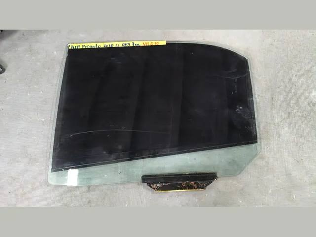
VA010KIA Picanto2018-26 · original VA014KIA Sportage2011-16 · genérico
VA014KIA Sportage2011-16 · genérico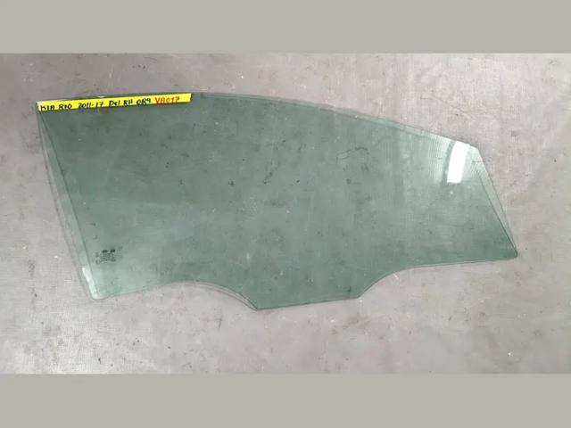
VA017KIA Rio2012-17 · lado derecho · original VA018KIA Rio2012-17 · lado izquierdo · original
VA018KIA Rio2012-17 · lado izquierdo · original VA021KIA Rio2012-17 · original
VA021KIA Rio2012-17 · original VA022KIA Soluto2020-26 · lado derecho · original
VA022KIA Soluto2020-26 · lado derecho · original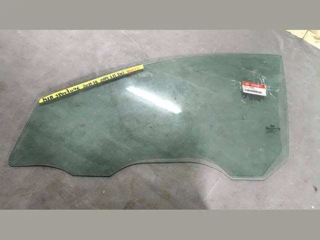
VA023KIA Sportage2011-16 · lado izquierdo · original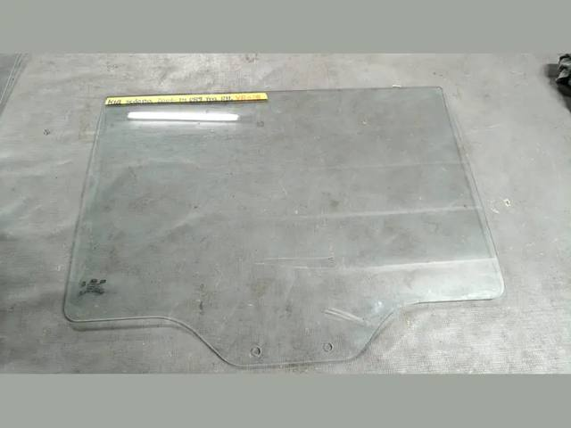
VA028KIA Sedona2006-14 · lado derecho · original VA024KIA Rio2012-17 · original
VA024KIA Rio2012-17 · original VA034KIA Rio2012-17 · original
VA034KIA Rio2012-17 · original VA038KIA Forte2014-18 · lado derecho · original
VA038KIA Forte2014-18 · lado derecho · original VA047KIA Picanto2011-17 · lado derecho · original
VA047KIA Picanto2011-17 · lado derecho · originalVidrios para Hyundai 8
 VA013Hyundai Accent2011-17 · lado izquierdo · original
VA013Hyundai Accent2011-17 · lado izquierdo · original VA020Hyundai Grand i102021-25 · original
VA020Hyundai Grand i102021-25 · original VA027Hyundai Accent2018-22 · lado derecho · original
VA027Hyundai Accent2018-22 · lado derecho · original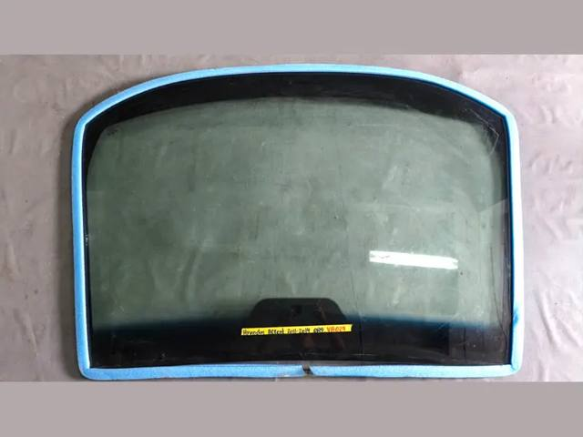
VA029Hyundai Accent2011-17 · original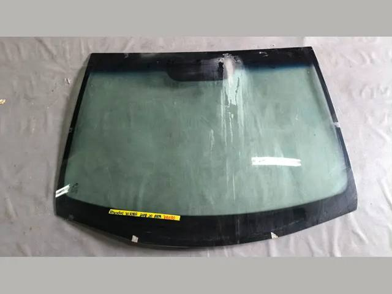
VA030Hyundai Verna2018-22 · original VA036Hyundai Accent2018-22 · original nuevo
VA036Hyundai Accent2018-22 · original nuevo VA037Hyundai Grand i102013-17 · original
VA037Hyundai Grand i102013-17 · original VA045Hyundai Tucson2010-15 · lado derecho · original
VA045Hyundai Tucson2010-15 · lado derecho · originalVidrios para Nissan 6
 VA003Nissan X-Trail2014-20 · lado derecho · original
VA003Nissan X-Trail2014-20 · lado derecho · original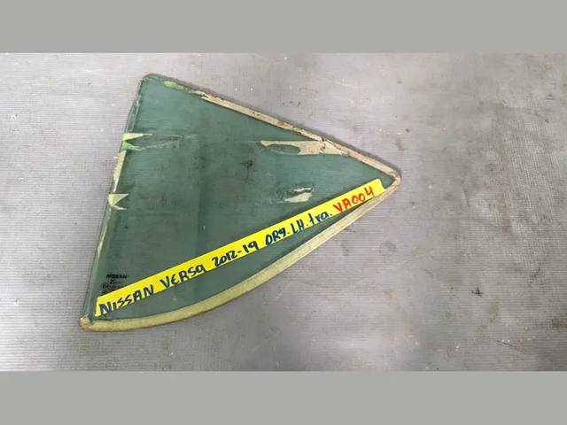
VA004Nissan Versa2012-19 · lado izquierdo · original VA011Nissan Versa2012-19 · lado izquierdo · original
VA011Nissan Versa2012-19 · lado izquierdo · original VA012Nissan Frontier NP3002016-25 · lado izquierdo · genérico
VA012Nissan Frontier NP3002016-25 · lado izquierdo · genérico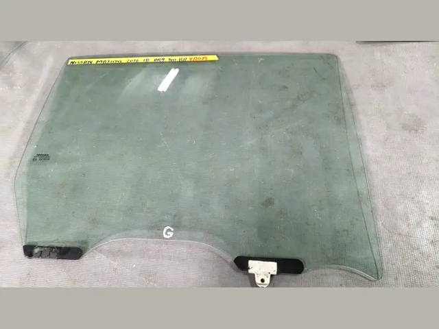
VA025Nissan Maxima2016-23 · lado derecho · original VA041Nissan X-Trail2014-20 · lado derecho · original
VA041Nissan X-Trail2014-20 · lado derecho · originalVidrios para Toyota 5
 VA005Toyota Yaris2006-13 · original
VA005Toyota Yaris2006-13 · original VA016Toyota RAV42006-12 · genérico
VA016Toyota RAV42006-12 · genérico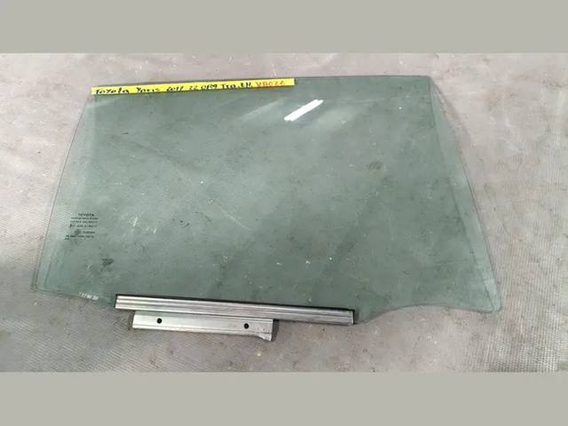
VA026Toyota Yaris2017-22 · lado izquierdo · original VA031Toyota Corolla2009-13 · genérico
VA031Toyota Corolla2009-13 · genérico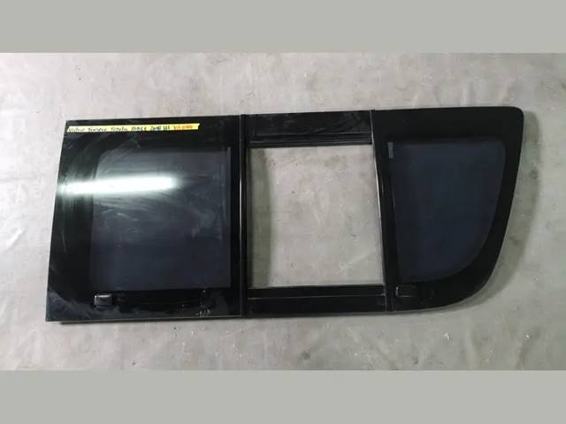
VA044Toyota Hiace2005-18 · lado izquierdo · originalVidrios para Suzuki 4
 VA002Suzuki Ertiga2012-18 · original
VA002Suzuki Ertiga2012-18 · original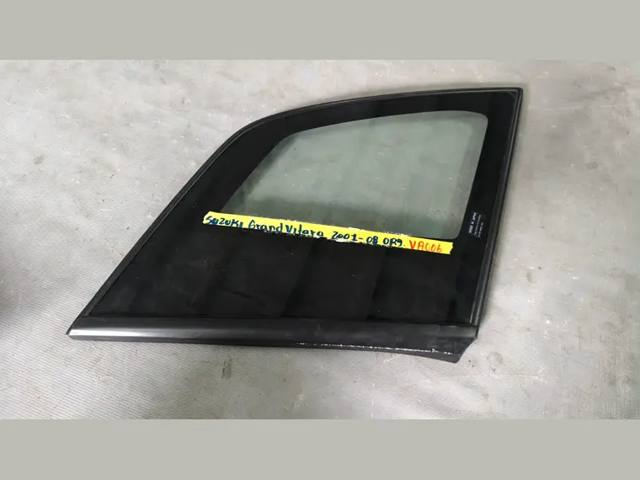
VA006Suzuki Grand Vitara2001-08 · original VA032Suzuki Ertiga2012-18 · genérico
VA032Suzuki Ertiga2012-18 · genérico VA042Suzuki SX42006-14 · lado izquierdo · original
VA042Suzuki SX42006-14 · lado izquierdo · originalVidrios para Honda 2
 VA019Honda Civic2006-11 · lado derecho · genérico
VA019Honda Civic2006-11 · lado derecho · genérico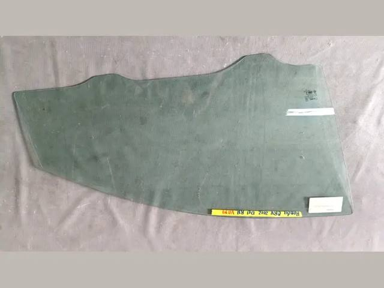
VA039Honda CR-V2012-16 · lado derecho · originalVidrios para Jeep 1
Vidrios para Mercedes-Benz 1
 VA008Mercedes-Benz GLE Coupé
VA008Mercedes-Benz GLE CoupéVidrios para GAC 1
 VA015GAC Emzoom
VA015GAC EmzoomVidrios para Isuzu 1
 VA033Isuzu D-Max
VA033Isuzu D-MaxVidrios para BMW 1
 VA035BMW X4 G02
VA035BMW X4 G02Vidrios para Mazda 1
 VA040Mazda CX-5
VA040Mazda CX-5Vidrios para DFSK 1
Vidrios para Mitsubishi 1
Otros tipos de pieza
Parrillas 340Faros y lámparas delanteras 265Defensas traseras 262Defensas delanteras 221Lámparas traseras 210Flares 183Covers de halógena 167Guardafangos 143Halógenas y faros antiniebla 114Puertas 99Cubrepolvos 93Refuerzos delanteros 79Capós 69Tapas de baúl 69Depósitos de agua 64Marcos de radiador 58Retrovisores 57Estribos y rolling boards 55Defensas traseras inferiores 55Defensas delanteras inferiores 54Tapas superiores de radiador 49Molduras de puerta 47Molduras traseras 44Protectores inferiores 29Refuerzos traseros 28Guardafangos traseros 22Copas 20Extensiones de defensa trasera 18Ventiladores 13Molduras delanteras 13Extensiones de defensa delantera 8Tableros 6Accesorios nuevos 5Soportes de defensa 2Discos de freno 1Covers de vagón (bedliner) 1